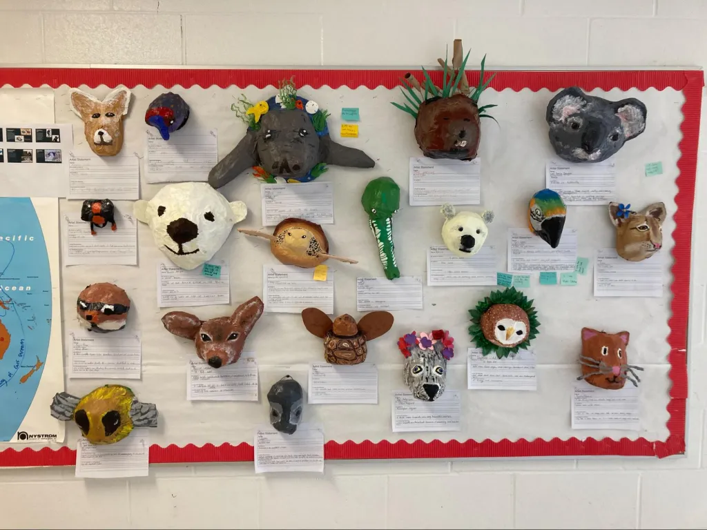

Understanding climate as a complex system is one thing. Teaching it that way is another. Most classrooms still split knowledge into separate subjects with tidy answers — but complex problems don't work like that.
An interdisciplinary approach means designing learning that matches the shape of the problem — connecting science, social studies, ethics, and students' own experience in one inquiry.
Schaeffer's (2023) Edutopia article, linked at the end of this section, shows what this looks like in practice. Read it through the four principles below.

You have now read three perspectives: a systemic framework, a planetary map, and a classroom approach. One last step before class — a question to hold while you sleep on all of it.
Read the Edutopia article, then finish with Section 5 — a single reflection question to carry into class.